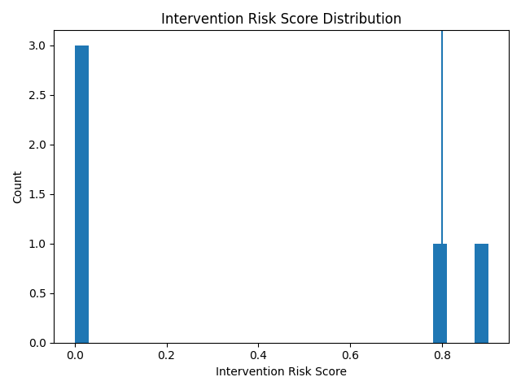
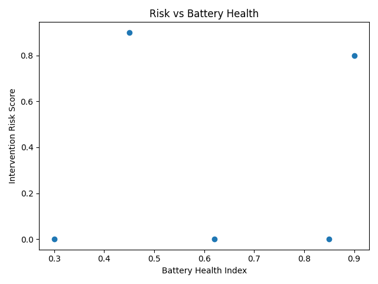
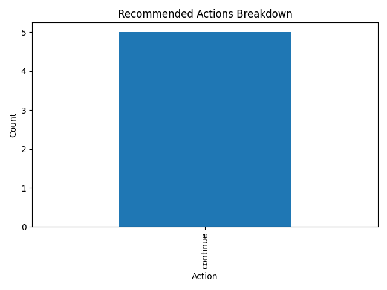

3. Risk Across Utilization
How utilization percentile correlates with operational risk. This highlights overused assets that may need rebalancing or maintenance.

This dashboard provides a high-level view of operational risk and recommended actions based on trip-level decision outputs.
Distribution of intervention risk scores. The right tail represents assets that may require immediate attention.
Relationship between battery health and intervention risk. This helps validate whether battery degradation is driving risk.
How utilization percentile correlates with operational risk. This highlights overused assets that may need rebalancing or maintenance.
Breakdown of actions recommended by the decision system. This view helps operations teams estimate workload and prioritize resources.
